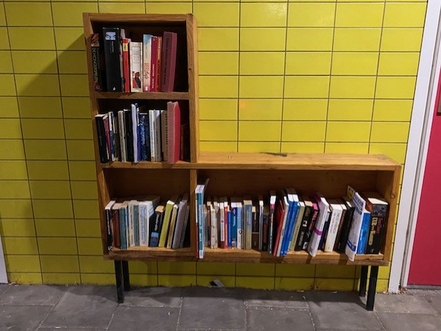

In Amsterdam is er een duurzaam initiatief: Openbare boekenkastje. Het concept van de kastjes is dat iedereen er een boekje vandaan kan halen om te lezen en vervolgens ook eentje terug kan leggen.
Geplaatst in parken, straatjes en pleinen, creëren deze kastjes een gevoel van saamhorigheid, waar mensen samenkomen om allerlei verschillende boeken te ontdekken. Ze stimuleren delen, hergebruik en de liefde voor lezen.
Deze openbare boekenkastjes versterken de band tussen inwoners en hun stad, en herinneren ons eraan dat kennis en fantasie altijd toegankelijk zijn, zelfs tussen de drukte van het dagelijkse leven.
